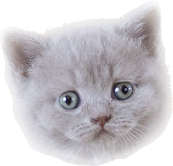

<!DOCTYPE html>
<html>
	<head>
		<title>WebComponent</title>
		<script>
			class CoolCat extends HTMLElement {
				constructor() {
					super();

					this.startTime = null;
					this.width = 337;
					this.height = 323;

					const shadowRoot = this.attachShadow({
						mode: 'open'
					});
					const t = document.querySelector('#x-cool-cat');
					const instance = t.content.cloneNode(true);
					shadowRoot.appendChild(instance);

					this.catStyle = shadowRoot.querySelector('.cool-cat').style;
					this.catStyle.width = this.width + 'px';
					this.catStyle.height = this.height + 'px';

					this.addEventListener('click', this);
				}

				static get observedAttributes() {
					return ['velocity', 'animating'];
				}

				get velocity() {
					return this.getAttribute('velocity');
				}
				set velocity(velocity = 1) {
					this.setAttribute('velocity', velocity);
				}

				get animating() {
					return this.hasAttribute('animating');
				}
				set animating(isAnimating) {
					if (isAnimating) {
						this.setAttribute('animating', '');
					} else {
						this.removeAttribute('animating');
					}
				}

				attributeChangedCallback(attrName, oldVal, newVal) {
					if (this.animating) {
						window.requestAnimationFrame(this.doAnimate.bind(this));
					}
				}

				handleEvent(e) {
					switch (e.type) {
						case 'click':
							this.animating = !this.animating;
						break;
						default:
							console.log('some event', e);
						break;
					}
				}

				doAnimate(timestamp) {
					if (!this.animating) {
						return;
					}
					if (!this.startTime) {
						this.startTime = timestamp;
					}

					const progress = timestamp - this.startTime;

					const max = {
						x: window.innerWidth - this.width,
						y: window.innerHeight - this.height
					};
					const x =
						(.5 + .5 * Math.sin(progress / 10000 * this.velocity)) * max.x;
					const y =
						(.5 + .5 * Math.cos(progress / 10000 * this.velocity)) * max.y;

					this.catStyle.transform = `translate(${x}px, ${y}px)`;
					window.requestAnimationFrame(this.doAnimate.bind(this));
				}

				connectedCallback() {
					console.log('connectedCallback');
				}
				disconnectedCallback() {
					console.log('disconnectedCallback');
				}
			}

			document.addEventListener('DOMContentLoaded', e => {
				window.customElements.define('cool-cat', CoolCat);
			});
		</script>
		<template id="x-cool-cat">
			<style>
				:host {
					position: absolute;
					left: 0;
					top: 0;
				}
			</style>
			
		</template>

		<style>
			body,
			html {
				overflow: hidden;
				margin: 0;
				padding: 0;
			}
		</style>
	</head>
	<body>
		<cool-cat velocity="20"/>
	</body>
</html>
